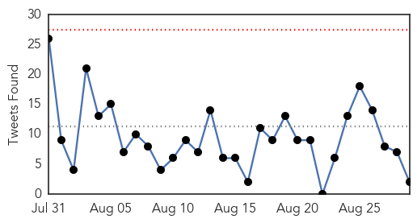
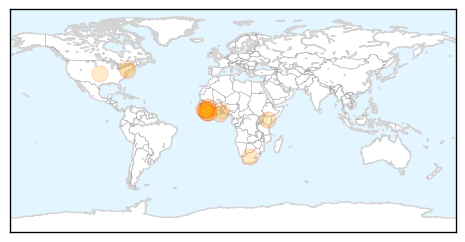
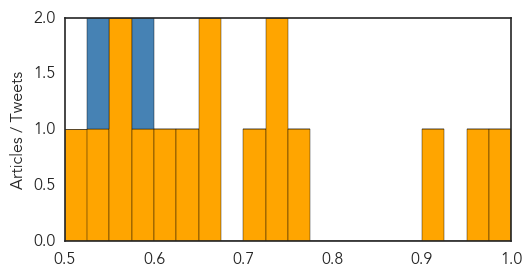
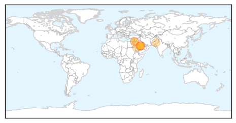

Ebola
30-Day Web Trend
1 alerts, 0 warnings

30-Day Twitter Trend
0 alerts, 0 warnings

Article Locations
Article Confidences
Top Articles:
- 1.000
- William P.J. Lynch Jr.comWilliam P.J. Lynch Jr.com
- 0.972
- Staying safe in Ebola quarantine without Mum or Dad - Sierra Leone
- 0.907
- As the countdown to 42 days begins, children go back to school in Sierra Leone
- 0.774
- Sierra Leone Telegraph
- 0.749
- Roundup: Ebola scare hampers Africa's int'l tourism growth
- 0.733
- Ebola scare hampers Africa's int'l tourism growth
- 0.701
- Terry Waite: 'Hope got me through hostage hell and it'll help Ebola crisis victims too'
- 0.662
- Gov’t, others urged to support Ebola orphans in schools
- 0.657
- Ebola survivor who lost 21 relatives gives birth to baby boy
- 0.636
- Nancy Snyderman's Experience Was Different From Mine
- 0.612
- No Ebola Panic Despite Media Hysteria
- 0.592
- Off Main: A public health issue we don’t think about
- 0.567
- Suspension of Monologue Program and Democrat Newspaper by IMC
- 0.565
- Ebola Flashback: Nancy Snyderman's Experience Was Different From Mine
- 0.550
- A Case of Plasmodium Falciparum Malaria Presentation.
- 0.521
- Sierra Leone: Staying safe in Ebola quarantine without Mum or Dad
Top Tweets:
- 0.593
- Ebola Flashback: Nancy Snyderman's Experience Was Different From Mine - NPR http://t.co/DTkGzbH6PX ebola EVD
- 0.542
- Sanford Health Look For People To Participate in Ebola Vaccine Study - Valley News Live http://t.co/mZBIov2RWt ebola EVD
MERS
30-Day Web Trend
0 alerts, 0 warnings

30-Day Twitter Trend
4 alerts, 0 warnings

Article Locations
Article Confidences

Top Articles:
- 0.999
- Number of Deaths from MERS Rising in Saudi Arabia
- 0.999
- MERS deaths threaten to put a shroud over the Hajj in Saudi Arabia
- 0.996
- Two new cases of MERS coronavirus registered
- 0.996
- Saudi Arabia sees MERS deaths surge The Nation
- 0.985
- Deaths from MERS virus surge in Saudi Arabia
- 0.892
- Ban on camel sacrifice raises questions
- 0.834
- Riyadh, Jordan each report two new MERS cases
- 0.713
- Riyadh hospitals step up efforts to combat coronavirusHealthcare
Top Tweets:
-
No tweets found for Aug 29, 2015